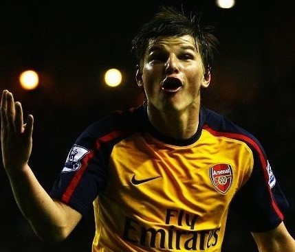
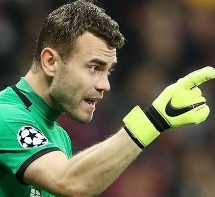
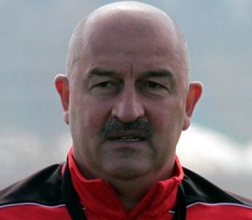

| Свежие Новости | Интересные интервью со звёздами российского футбола | Разное |
|---|---|---|
Орлов: «Кокорин – талантливый и сильный футболист для России, но для Италии…» |
 Интервью Андрея АршавинаВ этом интервью главный герой расскажет о переходе в краснодарскую Кубань, старых травмах, иностранной медицине, а также о том, чем отличается Чемпионат России от чемпионата Казахстана, о выступлении за сборную своей страны на ЕВРО-2012 и знаменитой фразе:"Ваши ожидания - это ваши проблемы". |
|
Дзюба в топ-10 игроков Европы, которые могут стать свободными агентами |
||
| Манчини: «Рано или поздно я бы выиграл с «Интером» Лигу чемпионов» |
||
| «Челси» активировал пункт продления контракта с Жиру, а также нацелился на Мертенса |
 Интервью Игоря АкинфееваЭкс-вратарь сборной России, а ныне игрок и капитан московского ЦСКА Игорь Акинфеев расскажет о дерби со Спартаком, выступлении сборной на домашнем мундиале, о своих поклонницах и странных сообщениях в социальных сетях, а также о старом и новом ЦСКА, мыслях о будущем и учебнике, которым он гордится. |
Матчи сегодня:1)Смолевичи - Динамо Минск (Белоруссия) 2)Неман - Энергетик-БГУ (Белоруссия) 3)Локомотив Памир - Хатлон (Таджикистан) 4)Худжанд - Регар-ТадАЗ (Таджикистан) 5)Наполи - Барселона (Лига чемпионов) 6)Лацио - Болонья (Лига чемпионов) 7)Ахмат - Краснодар (Россия) |
| «Флорентино Перес всё ещё мечтает подписать Неймара» - бывший агент игрока |
||
| Вальверде – о Месси: «Он чувствует ответственность не только за игру, но и за клуб» |
||
«Боруссия» намерена предложить Санчо новый контракт |
 Интервью Станислава ЧерчесоваТренер сборной России по футболу Станислав Саламович Черчесов в экслюзивном интервью спустя 3 месяца после завершения Чемпионата Мира - о взаимоотношении внутри коллектива, о приемуществах и недостатках чемпионата России, а также о том, какие шансы у сборной на победу на предстоящем ЕВРО-2020. |
|
Мюллер: «Хочу, чтобы люди говорили: «Чувак, это же Мюллер, он после 30 лет смог снова выиграть Лигу чемпионов» |
||
Худяков: «Если после майских праздников пандемия пойдёт на спад, то при пустых трибунах можно смело играть» |